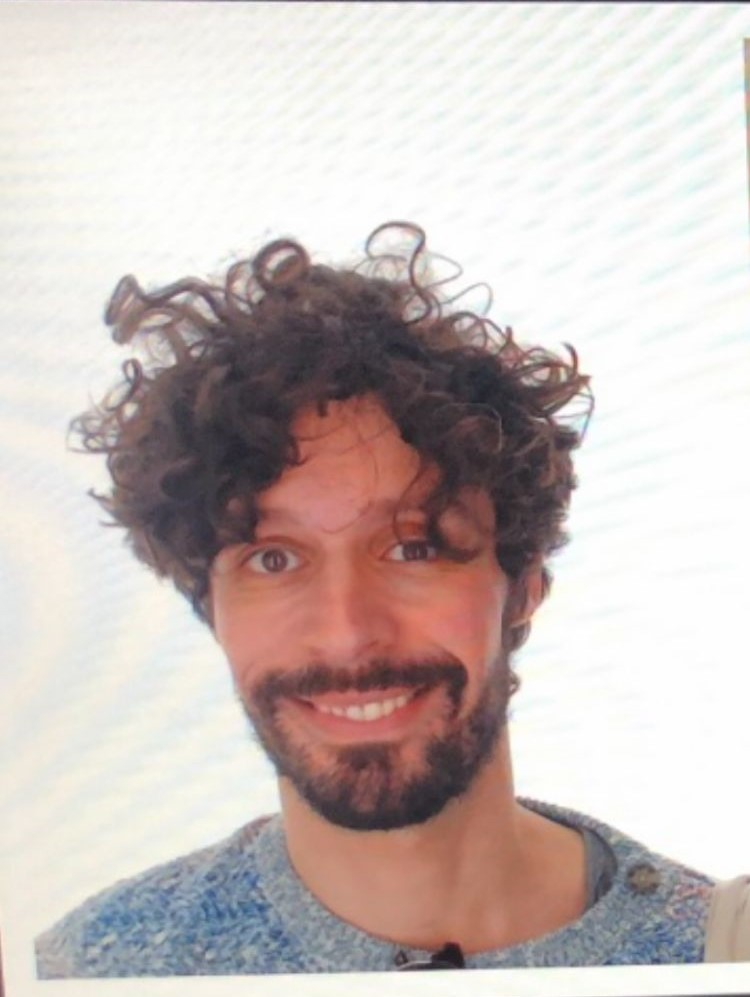
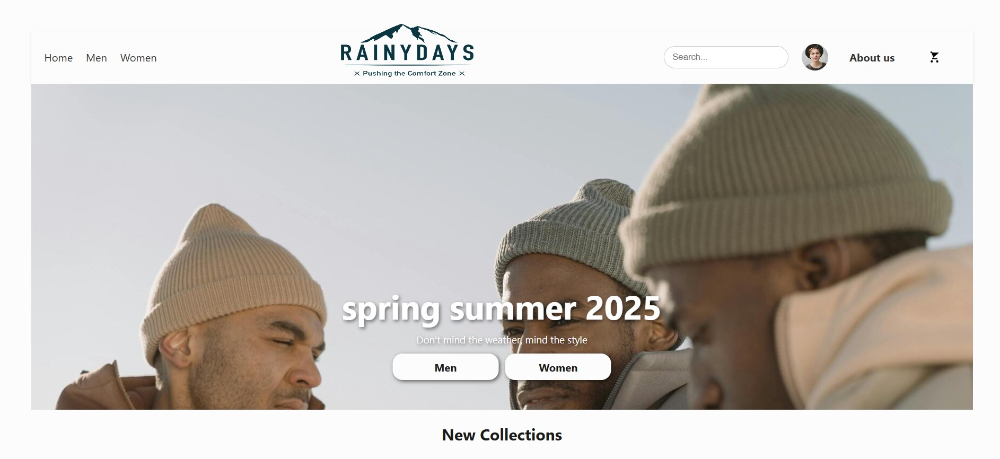
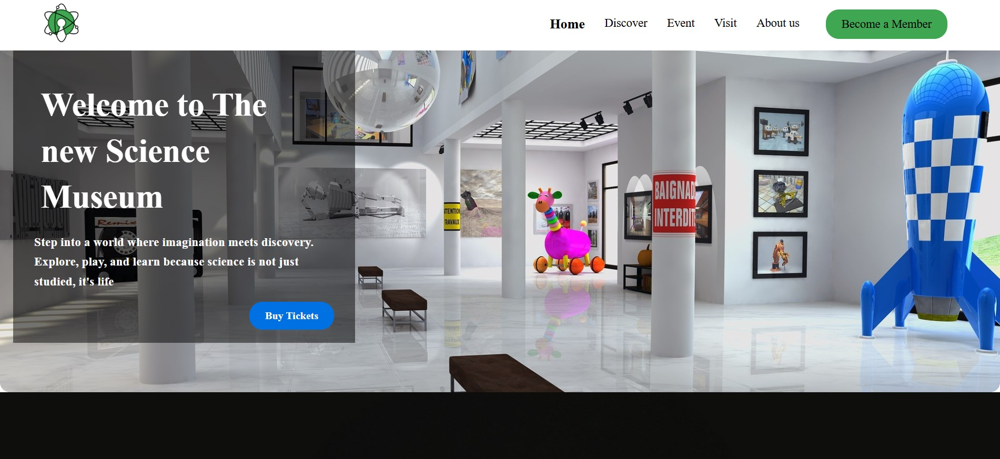
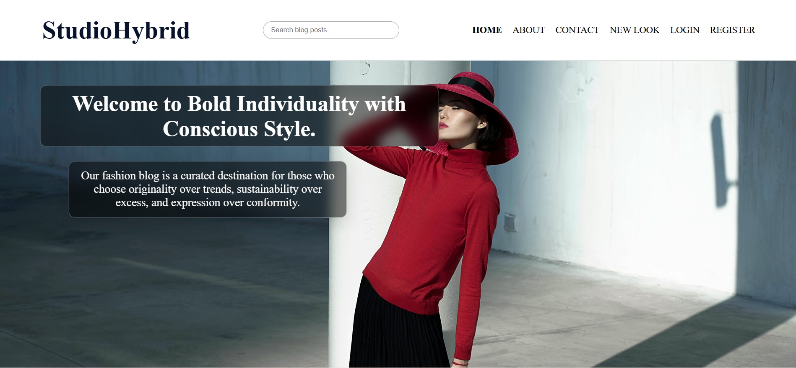

Front-end Developer & UX Designer
Hi there 👋
My name is Anthony Apicella. I am currently studying Front-End Development after completing a UX Design program at Noroff. Rooted in Marseille and guided by a poetic mindset, I approach development with curiosity and creativity. I focus on building interfaces using HTML, CSS and JavaScript and Figma for UX Design project. My goal is simple: make life easier for users. I enjoy researching user needs, experimenting with solutions through testing, and crafting digital experiences that feel intuitive and meaningful. Because in life, we don't really have problems — we have challenges.
Front End Projects

Rainy Days
Rainy Days is a front-end e-commerce project focused on selling rain jackets for outdoor enthusiasts. The goal was to build a responsive website using HTML, CSS, and JavaScript while focusing on user needs and navigation.
- HTML
- CSS
- JavaScript

Science Museum
Community Science Museum is a responsive website designed for a fictional science museum aimed at inspiring curiosity and learning. The project focuses on accessibility, layout, usability, and responsive design using HTML and CSS.
- HTML
- CSS

Studio Hybrid
Studio Hybrid is a blog-style website developed as part of an exam project. The goal was to create a responsive platform where users can explore posts while focusing on layout, navigation, and dynamic content.
- HTML
- CSS
- JavaScript
- Figma